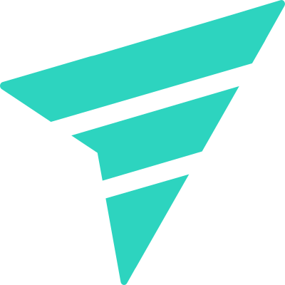

Decide beyond the next release
Architecture, strategy, and product improve when they consider consequences, maintenance, and the capacity to evolve.
fael.tech expands its horizon. Inspired by the scale of time and the central role of knowledge in Isaac Asimov's Foundation saga, this proposal turns direction, motion, and impact into a language for thinking about systems that need to last.
The reference is not the aesthetics of a franchise, but the questions the saga explores: how to act within systems larger than a lifetime, how to preserve knowledge, and how to prepare possible futures.
Architecture, strategy, and product improve when they consider consequences, maintenance, and the capacity to evolve.
Documenting, contextualizing, and distributing knowledge reduces dependencies and lets systems cross people, teams, and cycles.
The future is not an exact line. Good systems expand options, make signals legible, and preserve room for human decisions.

The evolution does not erase the previous identity. The pointer still represents action, the ship still suggests exploration, and the circle remains the context. The new language expands the scale of that field: from an immediate orbit to a network of possible trajectories.
The system combines the technical rigor already present in the brand with a greater sense of scale. The result must remain functional across interfaces, code, documents, and products, not only in concept images.
The official palette remains the foundation. Teal guides; ink creates depth; paper restores clarity.
The warm light from the moodboard appears only in photography and illustration. It creates atmosphere but does not become a new brand token.
Orbits show context, lines connect decisions, and vertical volumes represent preserved knowledge.
In products, the language becomes calmer and more informational. Glass organizes layers, orbits show relationships, and teal highlights what needs a decision. Atmosphere never competes with reading.
The system can grow without transferring complexity to people.
The knowledge required for decisions remains accessible.
People retain agency over paths and consequences.
The inspiration expands the repertoire but does not turn fael.tech into fiction. The brand remains direct, concrete, and centered on people. Metaphors open perspectives; evidence supports claims.
Visualize dependencies, trajectories, and impacts without hiding operations behind effects.
Organize findings and decisions so knowledge remains useful after the initial moment.
Explore scenarios rigorously while making signals, limits, choices, and consequences explicit.
An identity that turns complexity into direction, knowledge into motion, and technology into impact that remains human.